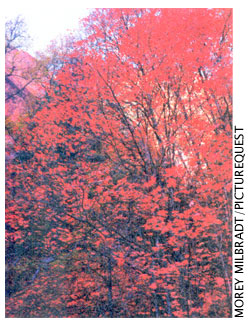
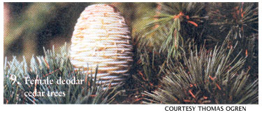

Green Gazette
Many commonly planted landscape trees are male trees that produce large amounts of pollen, but no fruit or seeds. While these "litterfree" male trees seemed more desirable than female trees, Thomas Ogren argues in his new book Allergy-free Gardening (see MOTHER's Bookshelf, Page 104) that planting so many pollen-producing trees around our homes has dramatically increased our exposure to irritating tree pollen. Here is Ogren's Top 10 list of pollen-free landscape trees.
1. Female juniper trees Also called Red Cedar; example: 'Pendula Virdis'
2. Female (fruit-bearing) Chinese Pistache trees
3. Female Ash trees Example: 'Summit' ash
4. Female Red Maple trees: Example: 'Autumn Glory'
5. Nonflowering olive cultivars Example: 'Swan Hill' olive
6. Female mulberry trees Example: Weeping mulberry
7. Fruit-bearing, female Hollies Example: 'Sparkler' English holly
8. Female poplars Example: 'Theves' poplar
9. Female deodar cedar trees
10. Female Silver Maple trees Example: 'Northline' silver maple
|
 |
 |
|